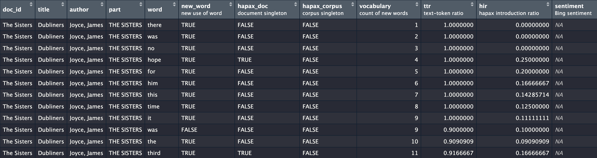

Labels and Logging
Clarifying process
Source:vignettes/articles/04-labels-and-narrative.Rmd
04-labels-and-narrative.RmdBecause sometimes we all get confused, tmtyro tries to keep things clear. In addition to using simple function names, tmtyro adds descriptive labels to variables explaining what they mean. It also logs steps in a workflow and offers tools to turn these built-in logs into a descriptive narrative.
Labels
In RStudio and Positron, variable labels show up in the data viewer.
Standard tmtyro functions that add columns—like
add_vocabulary() or add_sentiment()—prepare
reasonable default labels in English.
library(tmtyro)
corpus_dubliners <- get_gutenberg_corpus(2814) |>
load_texts() |>
identify_by(part) |>
standardize_titles() |>
add_vocabulary() |>
add_sentiment()These labels show in the IDE’s data viewer:

They’re also revealed in the data dictionary made with
get_data_dictionary():
get_data_dictionary(corpus_dubliners)
#> variable label class
#> 1 doc_id <NA> factor
#> 2 title <NA> character
#> 3 author <NA> character
#> 4 part <NA> character
#> 5 word <NA> character
#> 6 new_word new use of word logical
#> 7 hapax_doc document singleton logical
#> 8 hapax_corpus corpus singleton logical
#> 9 vocabulary count of new words integer
#> 10 ttr text-token ratio numeric
#> 11 hir hapax introduction ratio numeric
#> 12 sentiment Bing sentiment characterColumn labels can be easily modified with
set_data_dictionary():
dubliners_dd <- data.frame(
variable = "doc_id",
label = "story title"
)
corpus_dubliners <- corpus_dubliners |>
set_data_dictionary(dubliners_dd)
get_data_dictionary(corpus_dubliners, only_labeled = TRUE)
#> variable label class
#> 1 doc_id story title factor
#> 6 new_word new use of word logical
#> 7 hapax_doc document singleton logical
#> 8 hapax_corpus corpus singleton logical
#> 9 vocabulary count of new words integer
#> 10 ttr text-token ratio numeric
#> 11 hir hapax introduction ratio numeric
#> 12 sentiment Bing sentiment characterOff-label use
There are many ways to opt out of labels.
- Setting the environment variable
TMTYRO_USE_LABELStoFALSE—for example, either with the session-persistent commandSys.setenv(TMTYRO_USE_LABELS = FALSE)or by editing your.Renviron—will do the trick as long as the variable is defined. - Within a document or session,
options(tmtyro.use_labels = FALSE)will also disable them. - Functions adding columns also provide an argument to toggle labels
for these columns. For instance,
add_sentiment(label = FALSE)will avoid labeling thesentimentcolumn.
Labels can also be removed with drop_labels().
Logging
As tmtyro’s functions apply new transformations to a corpus, they
also record a reproducible log of what they did. This log is made
accessible to readers with the narrativize() function,
which explains the decisions made:
corpus_joyce <- get_gutenberg_corpus(c(2814, 4217, 4300)) |>
load_texts() |>
identify_by(title) |>
add_vocabulary()
narrativize(corpus_joyce)
#> - Retrieved a corpus from Project Gutenberg using ID numbers 2814, 4217, and 4300.
#> - Loaded texts by tokenizing words, converting to lowercase, and preserving paragraph breaks.
#> - Identified documents using the column `title`.
#> - Measured cumulative uniqueness of words in each document.This output would ideally be adjusted before it is shared, but the function can already be adjusted for perspective and format:
narrativize(corpus_joyce, person = "I", format = "text")
#> First I retrieved a corpus from Project Gutenberg using ID numbers 2814, 4217, and 4300. Then I loaded texts by tokenizing words, converting to lowercase, and preserving paragraph breaks. Next, I identified documents using the column `title`. Finally, I measured cumulative uniqueness of words in each document.Custom dictionaries
A reasonable narrative_dictionary_en is provided for use
with narrativize() by default. It can be used as a model to
prepare alternative sentences to follow a house style or to describe
process in another language.
narrative_dictionary_fr <- tibble::tribble(
~fn, ~parameter, ~narrative, ~prefix, ~suffix, ~plural_pre, ~plural_suf,
"get_gutenberg_corpus", NA, "Récupéré un corpus depuis Project Gutenberg à l'aide de {parameters}.", NA, NA, NA, NA, #
"get_gutenberg_corpus", "gutenberg_id", NA, "numéro d'ID", NA, "numéros d'ID", NA,
"load_texts", NA, "Préparé des textes{parameters}.", NA, NA, NA, NA, #
"load_texts", "parameters", NA, "en", NA, NA, NA,
"load_texts", "word", "tokenisant les mots", NA, NA, NA, NA,
"load_texts", "to_lower", "convertissant en minuscules", NA, NA, NA, NA,
"identify_by", NA, "Identifié les documents à l'aide de la {relevant_column}.", NA, NA, NA, NA,
"add_vocabulary", NA, "Calculé l'unicité des {feature}s au fil du temps.", NA, NA, NA, NA,
NA, "and", "et", NA, NA, NA, NA,
NA, "words", "mots", NA, NA, NA, NA,
NA, "column", "colonne", NA, NA, NA, NA,
)
narrativize(corpus_joyce, dictionary = narrative_dictionary_fr)
#> - Récupéré un corpus depuis Project Gutenberg à l'aide de numéros d'ID 2814, 4217, et 4300.
#> - Préparé des textes en tokenisant les mots et convertissant en minuscules.
#> - Identifié les documents à l'aide de la colonne `title`.
#> - Calculé l'unicité des mots au fil du temps.Navigating log jams
Because tmtyro relies on a fixed set of functions to preserve and prepare the log, using other functions can get things out of sync.
library(dplyr)
#>
#> Attaching package: 'dplyr'
#> The following objects are masked from 'package:stats':
#>
#> filter, lag
#> The following objects are masked from 'package:base':
#>
#> intersect, setdiff, setequal, union
corpus_joyce2 <- corpus_joyce |>
group_by(doc_id) |>
mutate(total_words = n()) |>
ungroup() |>
add_tf_idf()
narrativize(corpus_joyce2)
#> - Calculated TF-IDF values for each word across documents.Get around these log jams with helper functions
get_methods_log(), set_methods_log(), and
add_methods_log():
joyce_log <- get_methods_log(corpus_joyce)
corpus_joyce2 <- corpus_joyce |>
group_by(doc_id) |>
mutate(total_words = n()) |>
ungroup() |>
set_methods_log(joyce_log) |>
add_methods_log("Counted the total words in each document.") |>
add_tf_idf()
corpus_joyce2 |>
narrativize()
#> - Retrieved a corpus from Project Gutenberg using ID numbers 2814, 4217, and 4300.
#> - Loaded texts by tokenizing words, converting to lowercase, and preserving paragraph breaks.
#> - Identified documents using the column `title`.
#> - Measured cumulative uniqueness of words in each document.
#> - Counted the total words in each document.
#> - Calculated TF-IDF values for each word across documents.Avoiding logging
These logs are optional and can be disabled with an environment variable or per session:
- Setting the environment variable
TMTYRO_USE_LOGtoFALSE—for example, either with the session-persistent commandSys.setenv(TMTYRO_USE_LOG = FALSE)or by editing your.Renviron—will do the trick as long as the variable is defined. - Within a document or session,
options(tmtyro.use_log = FALSE)will also disable them.
An existing log can also be removed from an object x
with x <- set_methods_log(x, NULL).